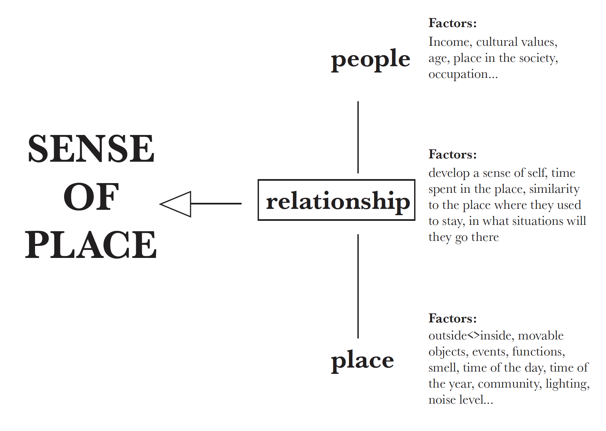

Through research, I found out that what really missing is the SENSE OF PLACE, which is affected by the people’s factors and the physical environment’s factors.
Hence, I decided to make an app that could allow users to conveniently access not only information about the physical space, but also the feelings of the space.
The concept of pip was inspired by Janpanese Shinto religion’s ancient animism belief—animate and inanimate things have spirits or souls that are worshipped, which have divine personalities and responds to truthful prayers (reference). Strip away the religious factors, I realise that this could be an interesting model to capture the sense of place.